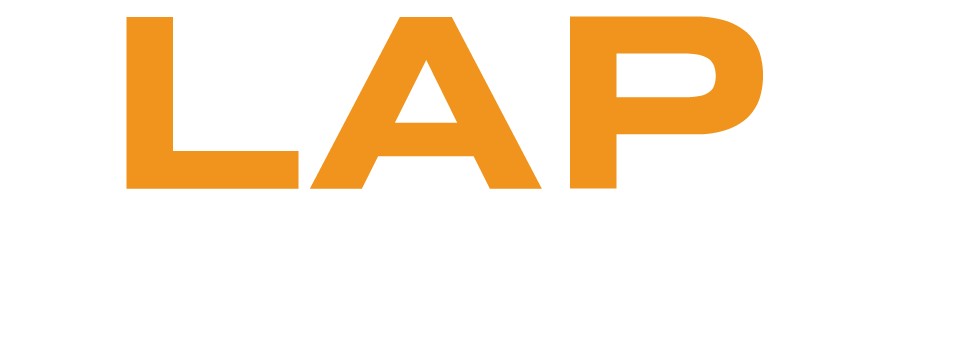

Lahenda uusi ülesandeid
Katseta oma teadmisi väljaspool tavapäraseid kooliülesandeid.
Võistlust korraldavad TalTechi Arvutisüsteemide Instituut ja tudengite tarkvaraarendusklubi MTÜ Lapikud.

I voor on individuaalne ning toimub kaugelt ehk saad lahendada kodust lahkumata. I vooru väljakutse sisaldab kolme väikest ülesannet ühe TalTechi tudengi lõputöö raames valminud mikrokontrolleri simulaatori peal. Esitada tuleb lahendused vähemalt kahele ülesandele kolmest ning lisaks üks endapoolne ülesande tekst ning vastav programmike. Õigeks ajaks töötavad lahendused esitanud võistlejaid tunnustatakse I vooru läbija meenega.
II voor on võistkondlik (tuleb registreerida 2–4-liikmeline võistkond) ning toimub kaugelt ehk saad lahendada kodust lahkumata. II vooru väljakutse sisaldab kahte ülesannet, mis võivad olla seotud veebi-, mobiili- ja/või mänguarendusega. Esitada tuleb lahendus vähemalt ühele ülesandele kahest, kuid mõlema esitamine võib anda rohkem punkte. Lisaks tuleb esitada 5-10 minuti pikkune video. Õigeks ajaks lahenduse/d ja video esitanud võistkondade liikmeid tunnustatakse osavõtudiplomi ning II vooru läbija meenega. Kaks parimat võistkonda valitakse lõppvooru.
Lõppvoor on võistkondlik ning toimub 13. märtsil 2027 kohapeal Tallinna Tehnikaülikooli Mektory majas. Lõppvooru valitakse kaks parimat 2–4-liikmelist võistkonda vastavalt II vooru ülesannete lahendustest saadud punktiskoorile. Lõppvooru väljakutseks on üks ülesanne, mille lahendamiseks on aega neli tundi. Ülesanne avalikustatakse finalistidele lõppvooru toimumispäeval. Lõppvoorus osalejad pälvivad TalTechi IT-teaduskonna Talendipileti ning erinevaid auhindu meie sponsoritelt vastavalt 1. või 2. koha saavutamisele. 1. koha võitnud võistkond pälvib "ASI Karikas 2027 võitja" tiitli.
Katseta oma teadmisi väljaspool tavapäraseid kooliülesandeid.
Jaga ideid, katseta lahendusi ja arenda meeskonnatöö oskust.
Finaali pääsenud tiimid saavad TalTechi IT-teaduskonna Talendipileti.
Tutvu ülesannetega ning esita individuaalsed lahendused vastavalt I vooru juhistele.
II voorus osalemiseks moodustage 2–4-liikmeline tiim. Vähemalt ühel liikmel peab olema I vooru salavõti.
Esitage lahendus ja tutvustav video tähtajaks. Täpsemad nõuded leiate II vooru lehelt.
Enne alustamist tutvu ka võistlusreeglitega.
Jah. I voor on individuaalne. II voorus osalemiseks on vaja 2–4-liikmelist võistkonda.
II vooru lahenduse esitamiseks peab vähemalt ühel võistkonnaliikmel olema I vooru salavõti.
I ja II voorus on see lubatud, kui kasutus on dokumenteeritud vastavalt vooru juhistele. Loe täpsemalt reeglitest.
Kirjuta asikarikas@asikarikas.ee.